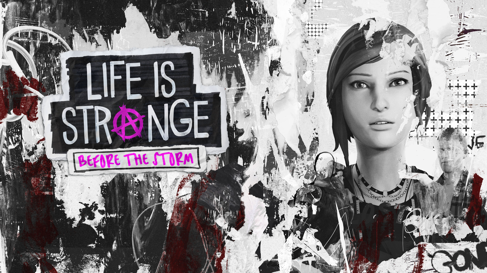

Life is Strange
Life Is Strange is a five part episodic game that sets out to revolutionize story based choice and consequence games by allowing the player to rewind time and affect the past, present and future.
Trailer

Life is Strange: Before the Storm
Life is Strange: Before the Storm is a new three part standalone story adventure set three years before the events of the first game. This time play as Chloe Price, a rebel who forms an unlikely friendship with Rachel Amber in a dramatic new story.
TrailerLife is Strange: Farewell
Experience Max and Chloe's childhood friendship in Farewell the bonus episode to Life is Strange Before the Storm. Ashly Burch and Hannah Telle reprise their roles in an emotional and nostalgic trip down memory lane.
Trailer